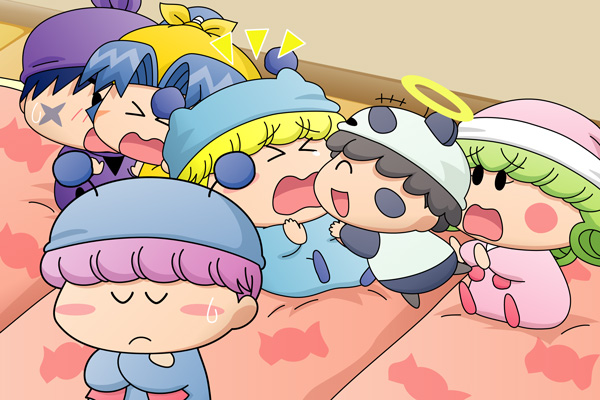

１階のリビングに集まって布団を敷く妖精たち（ヤシチ・パピィ・アロマを除く）。新たな事件を起こさないためにも、クモモの指示により今夜はみんなで集まって寝ることになりました。

リルム「ミルモ様と一緒に寝るのは久しぶりですわ」
パンタ「わぁ～い、ボクたんもミルモお兄ちゃんと一緒に寝るですっち」
ミルモ「わ～っ、パンタこっち来るなっての～～っ」
ヤマネ「きゃっ」
サスケ「おっとっと・・・ヤマネ・・・？」
ミルモに押されて後ろに倒れたヤマネを、サスケが抱きかかえるようにキャッチ。
サスケは顔を赤くしてそのままの状態で固まってしまいました。
そして突然割り込んできたパンタに対して、リルムはちょっと不機嫌な顔をしています。
ムルモ「何なんでしゅか、この緊張感の無い雰囲気は・・・」
騒がしい光景を背にして、ムルモは一人事件の推理を続けていました。
＊
それはアロマの部屋から１階のリビングへ戻る途中の出来事でした。
ムルモ「ところでお兄たま、
どうして皆しゃんはアロマしゃんの部屋へやって来たんでしゅか？」
ミルモ「ムルモたちがなかなか戻ってこなかったからな」
リルム「ヤマネさんが心配してみんなで見に行こうとおっしゃったのですわ」
ヤマネ「はい、アロマ殿のお部屋でまた何かあったのかと思いまして」
サスケ「ヤマネはとっても気が利くんだぜ」
ハンゾー「ヤシチの兄貴が知ったらきっと喜ぶのら～」
パンタ「アロマお姉ちゃんも、犯人に寝かされただけで良かったですっち」
アクミ「でもアロマにそういうことをした奴を、あたいは絶対に許さないよ」
＊
ムルモ「アロマしゃんの証言と合わせてみても、犯人はあの妖精で
間違いないのでしゅが、パピィをあんな風にさせたコーヒーマシュマロ
のトリックがどうしても分からないでしゅ・・・」
ムルモは推理を続けます。
ムルモ「それに３つの事件の動機もいまいち分からないでしゅ。
特にヤシチしゃんとアロマしゃんの事件は、時間が経てば犯人が
誰だか分かってしまうのに・・・。
もしかしたら犯人の目的は二人を眠らせることではなくて、
別の目的があるんでしゅかね？」
ふとムルモが予想する犯人の方を見てみるとその妖精と目が合ってしまい、ムルモは思わず目をそらしてしまいました。
クモモ「それでは皆さ～ん、そろそろ電気を消すクモよ」
前回から３ヶ月も間が開いてしまい申し訳ありません。今回で推理編もラストとなり、次回からは解決編へと移ります。どうやらムルモは犯人を特定できたみたいですが、皆さんは誰が犯人なのか予想が出来ましたか？（描写や情報がこんなにも少なかったら分かるわけないか^^;）なお、犯人の妖精は今回の絵の中に描かれています。
今回は１枚の絵に６人もの妖精を描いたため、時間がかかってしまいました。人数が増えてくると構図も難しくなるもので、どうしてサスケとヤマネがあんなに至近距離にいたのか？などのツッコミは無しでお願いいたします(^^;。それではラストへ向けてがんばります。
(2008/10/13)